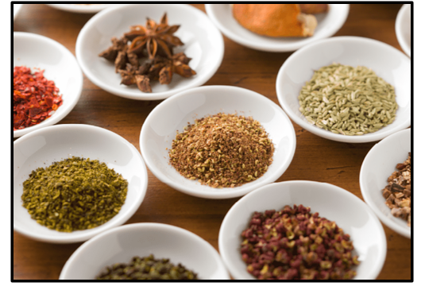

トップへ戻る
QUALITY
「米にこだわりを」
日本が誇る最高級のお米 魚沼コシヒカリを使用しています。
「魚沼産コシヒカリ」は高い山々から流れてくる雪解け水と山間地ならではの
昼夜の温度差が大きい独特の気候という、おいしいお米ができる条件がそろった
地域で作られたお米です。
ほかの産地では得られない粘りが持ち味で甘みが強く
つやがあることが特徴です。
「こだわりの口溶け」
"とろける美味さ"松阪牛を使用しています。
不飽和脂肪酸は融点（脂肪が溶け出す温度）が飽和脂肪酸より低く、
従って和牛肉を口に含むと脂が溶けて口当たりが良くなり、
輸入牛肉などに比べて
美味しく感じられるのです。
「こだわりは野菜にも」
高級ジャガイモ:いんかのめざめ・高級玉ねぎ:浜松篠原産新白玉ねぎを使用しています。
一般的なじゃが芋の糖度は４～５度くらいですが「インカのめざめ」は
約２倍の６～８度も有り、
ねっとりとした口当たりとさつま芋のような
ホクホクした食感を併せ持つのが特長です。
浜松篠原産新白玉ねぎは一般的な玉ねぎと違い驚くほどのみずみずしさと
芳醇な甘みとコク、また肉厚なのに柔らかいという特徴があります。

「本場のこだわり」
スパイスの黄金比
クミンシード（4）:嚙むたびに放つ香りと食感を生む
ターメリック（1）:香りがよく、カレーと言えばの色を出す
カイエンペッパー（4）:程よい辛みを足す
コリアンダー（8）:爽やかな香りを生む
クミンパウダー（4）:カレーを思わせるエスニックな芳香を生む
ガラムマサラ（2）:カレーの仕上げ
MAINPAGEに戻るには上部のTHE.CURRYかこちらをclick